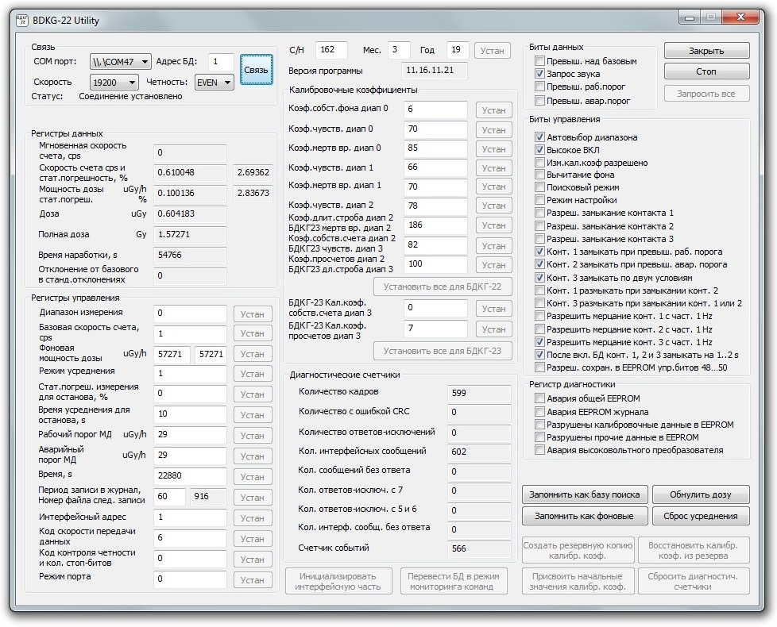

БДКГ-22/23. Подключение
Если необходимо изменить четность или скорость обмена:
- С 19200 на 9600, например, — изменить с 6 на 5
- Нажать "Устан"
- Для сохранения изменений выкл/вкл питание
- Про коды можно почитать здесь (про четность — стр.9)

Я подключаюсь таким переходником:

Включить программу BDKG-22 Utility. Настройки для подключения:
- Выбрать номер com порта с подключенным Usb-com адаптером
- Скорость — 19200
- Адрес БД — всегда 1
- Четность — EVEN
Эти настройки являются настройками по-умолчанию, привожу их просто "на всякий случай".
Вот так выглядит программа в простом режиме:

Некоторые датчики подключаются с другими настройками (например №: 4, 8, 36, 37, 39, 41):
- Скорость — 1200
- Адрес БД — всегда 1
- Четность — NONE
После того, как БД подключится, нажать "Старт". В окне программы сразу же появятся данные. Для работы с БД и для его настройки необходимо перейти в "Advanced Mode". Для этого необходимо набрать на клавиатуре слово serial. Вот так выглядит программа в этом режиме:  Для разблокировки кнопок управления — еще раз набрать слово serial.